#01 dish_001
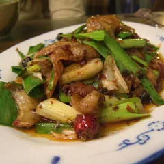
#02 dish_002
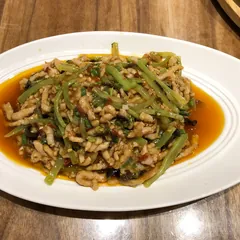
#03 dish_003
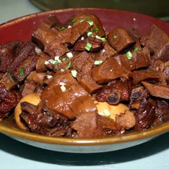
#04 dish_004
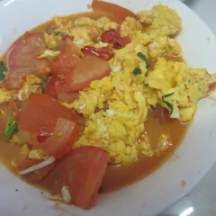
#05 dish_005
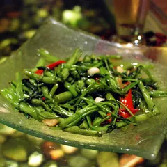
#06 dish_006
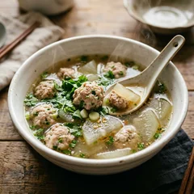
#07 dish_007
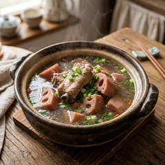
#08 dish_008
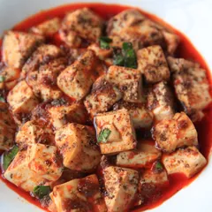
#09 dish_009
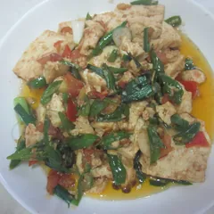
#10 dish_010
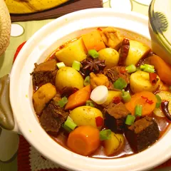
#11 dish_011
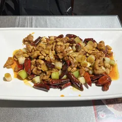
#12 dish_012

#13 dish_013
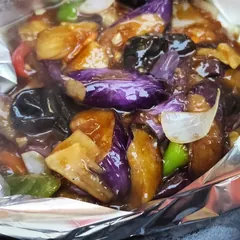
#14 dish_014
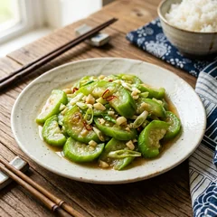
#15 dish_015
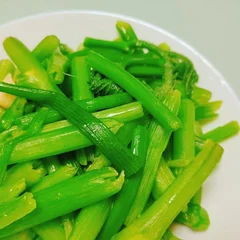
#16 dish_016
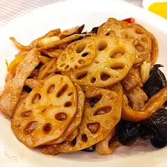
#17 dish_017
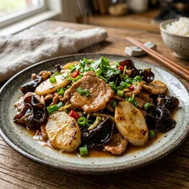
#18 dish_018
#19 dish_019
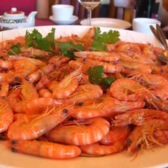
#20 dish_020
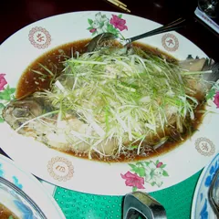
#21 dish_021
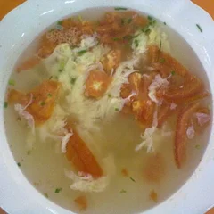
#22 dish_022
#23 dish_023
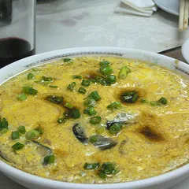
#24 dish_024
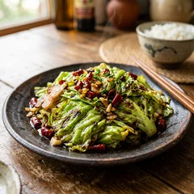
#25 dish_025
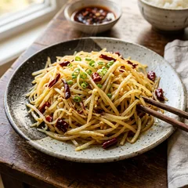
#26 dish_026
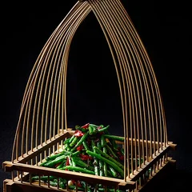
#27 dish_027
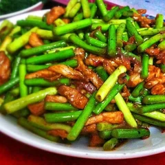
#28 dish_028
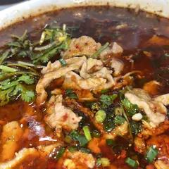
#29 dish_029
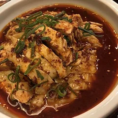
#30 dish_030
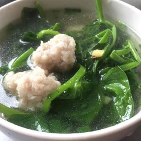
#31 dish_031
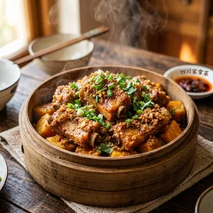
#32 dish_032
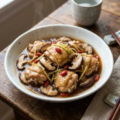
#33 dish_033
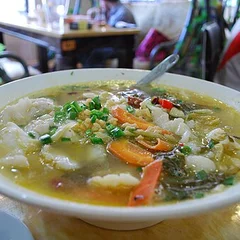
#34 dish_034
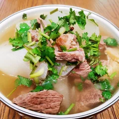
#35 dish_035
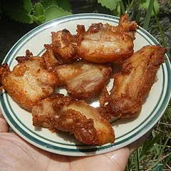
#36 dish_036
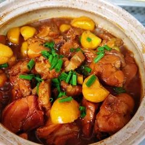
#37 dish_037
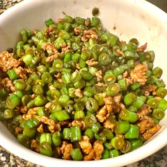
#38 dish_038
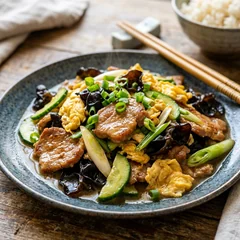
#39 dish_039
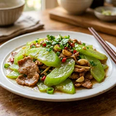
#40 dish_040
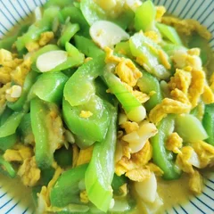
#41 dish_041
#42 dish_042
#43 dish_043
#44 dish_044
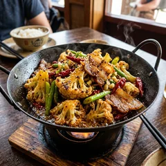
#45 dish_045
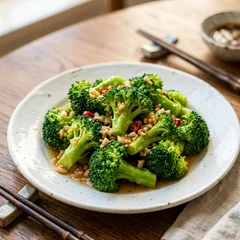
#46 dish_046
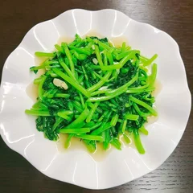
#47 dish_047
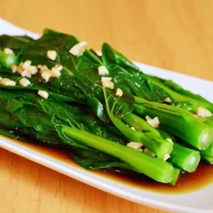
#48 dish_048
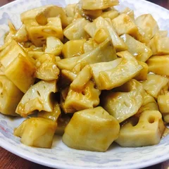
#49 dish_049
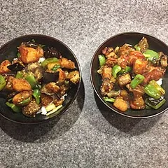
#50 dish_050
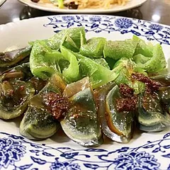
#51 dish_051
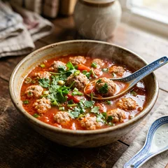
#52 dish_052
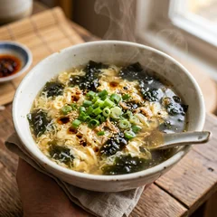
#53 dish_053
#54 dish_054
#55 dish_055